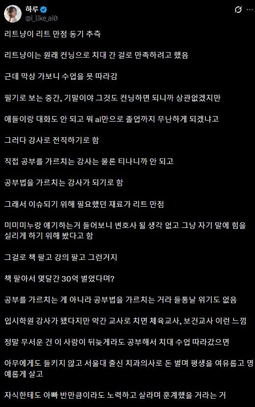

리트냥이 리트 만점 동기 추측
댓글
강의팔이 ㄷㄷ
이미 그렇게 꿀빨고 있는 사람들이 몇만명은 될듯
몇달간 30억? 그정도 벌었으면 해외로 튀면 튀었지 살자는 안했을거같은데
인세가 바로 나오는것도 아니고 고발도 들어오고 하니까 토할까봐
내가 출판업계에 지인들이 많아서 그런데
점마 책 전부(적어도 출판사라 불릴만한 곳들) 출판 거절당함ㅡ 누가봐도 AI딸깍이었거든
그래서 본인이 직접 사업자 집주소로 내고 1인 출판사 설립한거라 기자들이 인터뷰하러 집 찾아간거 반대로 이야기하면 인세는 바로바로 들어오지
아 1인출판사야? 고건 몰랐네
결국 인정욕구지
6등급이 애초에 공부한다고 따라갈 수 있는 머리가 아니잖아ㅋㅋ
방법이 없었던거임
그건 모르지. 베이스까지 다시 쌓을 생각으로 공부했다면 방법이 있었을지도. 물론 그런 정석적인 돌파법을 쓸만큼 머리가 제대로 돌아갈 리가 없었겠지만.
게다가 상황파악 못하고 이과 그것도 치대로 간 것처럼 너무 과하게 욕심부린게 들키게 된 화근이겠지. 문과쪽 가서 적당히 휴학도 섞어가며 예습하며 넘기거나, 아예 솔직하게 치대 동기들한테 나이 얘기하면서 내가 도무지 적응을 하기 힘들어서 그런데 공부법을 알려줄 수 있겠냐고 숙이고 들어갔다면 그러려니 했을지도?
건너건너 들은거지만 보통 머리로 의대수업 못 따라간다 ㅋㅋㅋ
보통 머리로 성실하게 공부하는 성격이면 치팅을 할 확률도 적고
보통머리는 따라감 빡대가리가 못따라가는거지ㅋㅋ
공부개못하는 특례생들도 유급없이 졸업하고
외국인특례 12년특례는 특례학원에서도 밑바닥깔다가 의대가는데 졸업다해ㅋㅋ
진짜 개빡대가리가 못따라가는거ㅋㅋ
의대생?
아는 척은 ㅋㅋ 의대생이세요? 누가 보면 경험자인 줄
그러니까 네가 말하는 그 보통머리도 일단 수능이든 뭐든 합격선은 넘은 수준이란 거잖아
아예 넘지도 못할 지능과 성실성인데, 치팅으로 넘어서 들어갈때가 문제인거지
??? 의대 유급없이 졸업하는거 자체가 존나 엘리트인건데, 대부분 다 유급함
비트코인 연말에 얼마보세요?
어느정도만 공부 하는 애 였기만 해도 까짓거 1,2년 유급할 지언정 졸업하고 의사시험 합격하는것도 가능함
그것마저 안될 처참한 머리니까 안됐던 거...
유급은 당연한데 국시를 통과할수있나?? 친구도 지금 의산데 수능치고 입학해도 국시못붙는 경우 꽤 있다고 하고
예전에 박내과?웹툰 보면 국시만 3번떨어진다거나 하는 케이스도 종종 있던데
동생이 미국4년대 졸업하고 경력 쌓다가 미국의대 들어갔는데 존나 빡쌔다던데 얜 바이오켐이 학부나와서 그나마 따라가는거 같던데 여자인데 탈모오는중ㅋㅋ
지금 5~60대들은 지금으로치면 3~4등급 애들이 의대갔고, 그 사람들 중 연구 좀 친다는 사람들이 지금 의대 교수들임. 굳이 1~2등급 인재가 갈 필요 없다고 보임
엥? 한국 50~60대 의사들이 지금 3~4등급애들이라고? 사실이야? 사실인지 궁금한데
7080 학번들은 서울대 물리, 기계, 전자공학이 입결 가장 높았고, sky 의대를 제외한 지방 국립대 의대의 경우 2~4등급 컷도(지금 기준으로 환산) 합격하던시기임. 이거 퇴직하사 서울대 이학박사님께(물리) 직접들은거임
의대가 진짜 암기가 ㅈ됨. Ppt200장 넘는걸 매주 시험보더라ㅋㅋㅋ 근데 그게 한과목이고 그런 과목이 8갠가 있음. 당연 다는 못따라가고 이해못하겠지만 아는척 꺼드럭대는 정도로는 따라갈 수 있음. 내가 보기엔 그냥 리트냥이가 게을러서 공부를 안한거. 평생 사기치다가 정정당당하게 공부하라하니까 빡센거지. 아니면 내가 진짜 7등급 능지를 너무 과대평가한거임.ㅋㅋㅋㅋ 진짜 능지 부족으로 못따라간걸수돜ㅋㅋ
나도 그렇게 생각해
따라감요. 잘 따라감.
10~20년 전만해도 해외 이름 모를 고등학교 나와서 의대입학 흔했음.
걔네 잘 먹고 잘 삼
30억은 맞냐?
겠냐에요 ㅋㅋ
한강이 노벨문학상 받고 소년이 온다로 1년동안 30억 벌었는데 리트 만점으로 노벨상을 어케 이김
ㅇㅇ ㅋㅋㅋ 심지어 그게 10년간 한국에서 제일 잘 팔린거
말하고 나니 웃기긴 하네
노벨상 받고 1년간 팔린게 10년 동안 가장 많이 팔린 책 된거라
책 안 읽긴 해 한국이
매출이 30억이면 몰라
베스트셀러 올라가서 10억정도는 벌었을거라던데 30억은 어디서 나온 숫자인지 모르겠음
베스트셀러까지 올랐어?
지금 한국에서 1년내 가장 많이 팔아도 10억이 안 됨
한강도 한강이 특이 케이스지 그 바로 다음 해 책부터 판매량 1위가 5억도 안 돼
구라임 3만부 정도 찍었다는 얘기만 있고 얼마나 팔렸는지는 모름
3만부면 매출=순이익이라쳐도 1부당 10만원이어야되는데
구라구만 ㅋㅋ
다행히 의료수업이 존나 빡세서 ㅋㅋㅋ
수업 따라가는건 노력의 문제인데 애초에 사기치고 돈벌던 놈이 부정행위로 좋은 학교 들어갔다고 성실하게 노력이라는걸 할리가 없지
ㄹㅇ 공부머리라는 게 따로 있어서 이게 의지만 가지고는 태생을 넘기가 참 힘듦
애초에 부정시험으로 졸업 해도 열심히 일해서 돈벌면서 살 생각 자체가 없다고
리트냥이가 벌어놓은 돈은.. 부모가 다 갖나?
의대는 모든 과목 전부 같은 학년끼리만 듣는 거임??
진짜 마지막이 킥이다 편법써서 들어갔지만 이렇게 들어간 이상 존나 열심히 공부해서 진짜 자기가 합격한것처럼 됐으면 괜찮았을텐데 그런 노력을 1도 안했다는게 이런 결과 만든듯
유급만 면한다는 마인드로 면허만 어떻게든 따면
치과의사 안해도 얼마든지 떵떵 거리면서 살 방법 많은데
그냥 멍청한거지
세상을 너무 만만히 본 걸까
남들이 못 하는 걸 해냈다면 사람들이 박수만 쳐주고 우러러 보기만 할 줄 알았는가
아니면 본인만의 세상에 살아서
내가 아는 지식은 나만의 독보적인거라 여겨, 마치 인터넷에서 웃긴썰이랍시고 드립 치러왔는데 사건반장땜에 노인정 할매들까지 다 알고 있는 그런 상황
진짜 머리가 조금이라도 있었으면 공무원에 만족했겠지 ㅋㅋ
이미 신라대 의전, 미국 커뮤니티 인문대생 출신 의전생들이 병원차리고 있다 ㅋㅋㅋㅋ
저기까지 갈것도 없음 ㅋㅋㅋ
의전가면 수업 못따라간다고 하는데
내가 통계청 20년 국시합격률, 유급 비율 봤는데 의전 생기기 전후 차이 없다
7등급 능지라 그런가 아니면 진짜 게을러서 그런가... 일단 4등급까지는 따라갈 수 있을거임 이건 확실함.
뭘 잘 모르네 실습이면 모르겠다만 요즘 예과 실험 실습 안본지 오래됐고..
뭐 치대는 다를 수도 있겠다만..
AI 안경으로 졸업까지 충분히 가능하다..
문제는 졸업하고 나서가 문제지 지가 무슨 빽이 있어 돈이 있어
환자 볼 실력이 안되니 개원의하고 로컬닥터 데려다 써야하는데
건물 올릴 돈도 없고 의사 데려다 쓸 돈도 없고 대출도 안나올꺼고 전과자에
그래서 학습법 강사로 돌아간거지 뭐 시험이 어렵고 졸업 못할꺼 같아서 그런건 아닐꺼다..
매시험 모든 퀴즈에서 써야하는건 리스크가 크다고 생각할 듯 한 번이라도 걸리면 인생 끝이니까
보니까 아싸도 아니고 동기애들 밥사주고 잘 놀았더만 그러면 시험이나 퀴즈보고 나서 지식이나 답에 대해서 자연스럽게 대화할테고 그럼 절대 티가 안날 수 없다고 자기가 더 느끼지 않았을까
40억씩 벌었다며?